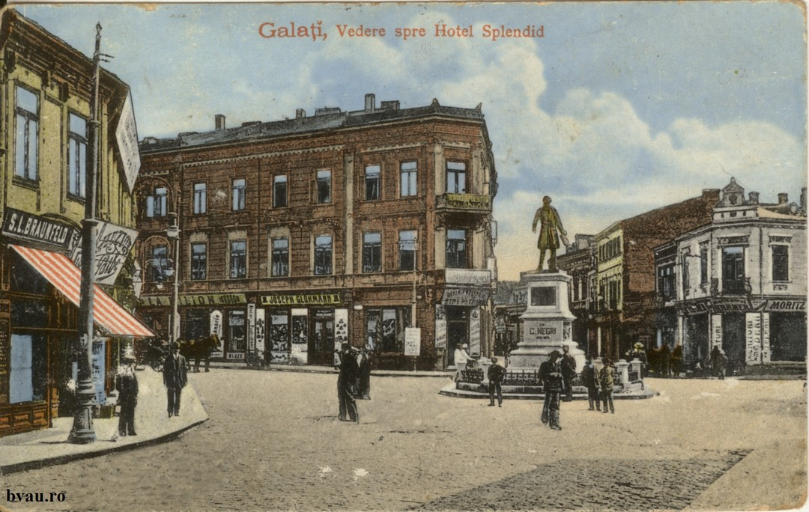
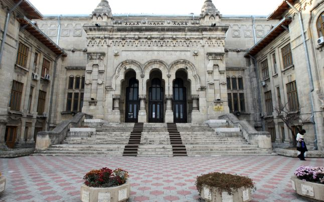

Galați is the capital city of Galați County, in the historical region of Western Moldavia, in eastern Romania. Galați is a port town on the Danube River. It has been the only port for the most part of Moldavia's existence. In 2011, the Romanian census recorded 249,432 residents, making it the 8th most populous city in Romania. Galați is an economic centre based around the port of Galați, the naval shipyard, and the largest steel mill in Romania, Galați steel works. The name Galați is derived from the Cuman word galat. This word is ultimately borrowed from the Persian word kalat, "fortress". Other etymologies have been suggested, such as the Serbian galac. However, the galat root appears in nearby toponyms, some of which show clearly a Cuman origin, for example Gălățui Lake, which has the typical Cuman -ui suffix for "water". Another toponym in the region is Galicia, with its town of Halych, locally associated with the jackdaw (Kawka, Halka). Before the Mongol invasion of Rus, Galați was known as Malyi Halych (Little Halych) as part of the Kingdom of Galicia–Volhynia.
- History
- Archeological evidence points to occupation of the region in the neolithic period. For example, north west of the town of Galați, on the eastern shores of the Malina marshes, fragments of ceramic-type Stoicani Aldeni, stilex and tools made of bone have been found. A stone sceptre, from the late Bronze Age, belonging to the Coslogeni culture was found on the marshes' southern bank. Galați town itself developed from an ancient Dacian settlement of the sixth and fifth centuries BCE where there was a ford across the Danube river. In 101 to 102 and 105 to 106, the Dacians fought wars against the Romans and the area became part of the Roman empire. A strong Roman fortress was built at Barboși to defend the ford across Danube. From the 300s a Daco-Roman settlement developed at a ford south of the site of the Church of the Virgin.

- Medieval period
- There is evidence of continuous inhabitation of Galați since the 600s. A treasure hoard consisting of 12 silver coins issued between 613 and 685 was found in a Byzantine tomb near the Church of the Virgin. Western and Byzantine coins from the time of Emperor Michael IV (1034–1041) were also found. At one time[when?], the city became part of the Republic of Genoa Territories and was called "Caladda".[12] In 1445, a document signed by Stephen II of Moldavia mentions Galați. In 1484, Chilia was conquered by Ottomans. Galați township remained Moldova's only port, not only for domestic trade but also for trade with Turkey and Poland. In 1590, the Galați Jewish cemetery was opened.
- 19th century
- In 1812, following the annexation by Russia of half of the principatity, including all of the sea shore and almost all of Danube, Galati ended up as the principality's only port. Due to unrest in this part of Europe, Galați port became a site for the construction of large warships. Despite the wars and unrest, Galați developed based on trade (especially grain exports). In 1805, France and England established vice-consulates. In 1832, the School of the Holy Archangels Michael and Gabriel is founded. Two years later, in 1834, Austrian ships were having scheduled arrivals and in 1837, Galați was declared a free port (this was revoked in 1882). In 1850, James Buchanan, the U.S. president, sent a vice-consul to Galați and the U.S. opened a consulate in 1858. Galați was also a trading port for German lands. When the Crimean War (1854–1856) finished, Galați became a seat of the Danube European Commission. In 1869, the Mihai Eminescu municipal park opened and by 1870, factories were opening. By, 1908 they numbered 41. On 13 September 1872, the King Charles I railway station and northern city rail tunnel opened. The River station opened shortly after on 24 September 1880. In 1889, the V. A. Urechia library opened. After the union of the Romanian principalities in 1859, with Alexandru Ioan Cuza as leader, development in Galați increased.
- 20th century
- Between 1900 and the beginning of World War I, Galați continued its trade in grain and timber with sixteen consulates. Galați was part of Covurlui County. In 1907, social unrest among the peasant classes precipitated intervention by the Romanian army. In 1911, a statue of the poet Mihai Eminescu was erected. Galați remained under Romanian control during World War I. Romanian soldiers fought alongside those of Russia against the army of the Central Powers.[citation needed] Galați was bombed by retreating Russian troops in January 1918. During World War II, Galați was bombed by the Soviet Air Forces and Luftwaffe. The railway station, inaugurated on 13 September 1872, was destroyed as were many other historic buildings and most of the old town. On 27 August 1944, Galați was captured by Soviet troops of the 3rd Ukrainian Front in the course of the Jassy–Kishinev Offensive. After World War II, Galați was rebuilt along communist lines. The town's population was about 80,000. In 1956, a proposal to join Brăila and Galați was made and the building of a speed tram pier was proposed with a Swiss company. The plans never materialized. Construction of the Galați steel works began in 1960 and the plant opened in 1966. The population at this time was 151,000. In 1971, the Făurei – Galați railway capacity was increased, and, in 1982, it was electrified.
Education

Galați has educational facilities catering to all ages and scholastic levels. School Nr. 24 (Holy Archangels Michael and Gabriel) is the oldest school in the county. It was founded in 1832. In 1896 it was located inside the Mitoc Monastery. On 26 October 1896 the current school building was inaugurated. The University of Galați, founded in 1974, includes 11 faculties (with two unique faculties in Romania: The Faculty of Naval Architecture and Department of Food Science and Engineering) and 3 colleges. The "Danubius University" is a private institution with departments in legal, economic and social studies fields. Galați also hosts several specialized research institutes. Four are unique within Romania: Icepronav (Research and Design Institute for Shipbuilding), Uzinsider Engineering (Institute for Research and Design for flat metal products), the Research Institute of Fish and the Wine Research Station Targu Bujor.In February 2013, Galați was the host city of the general meeting of the National Student Association, a forum of the Romanian Ministry of Education.